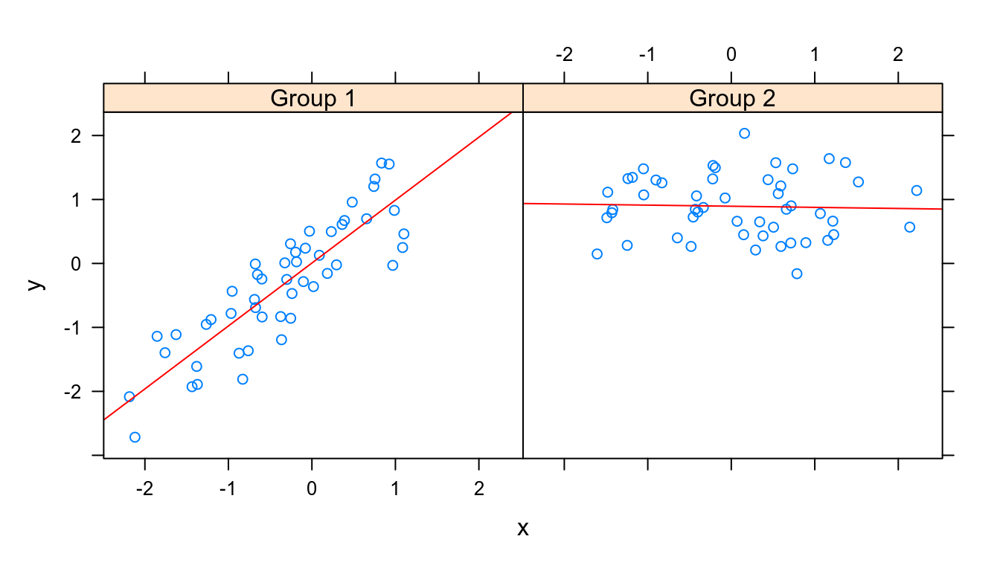
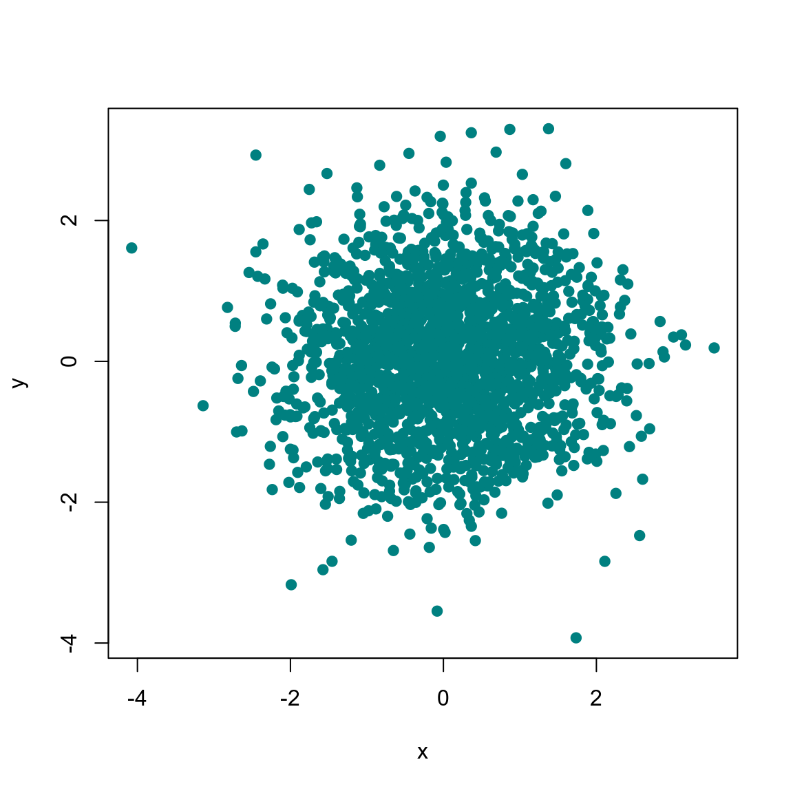
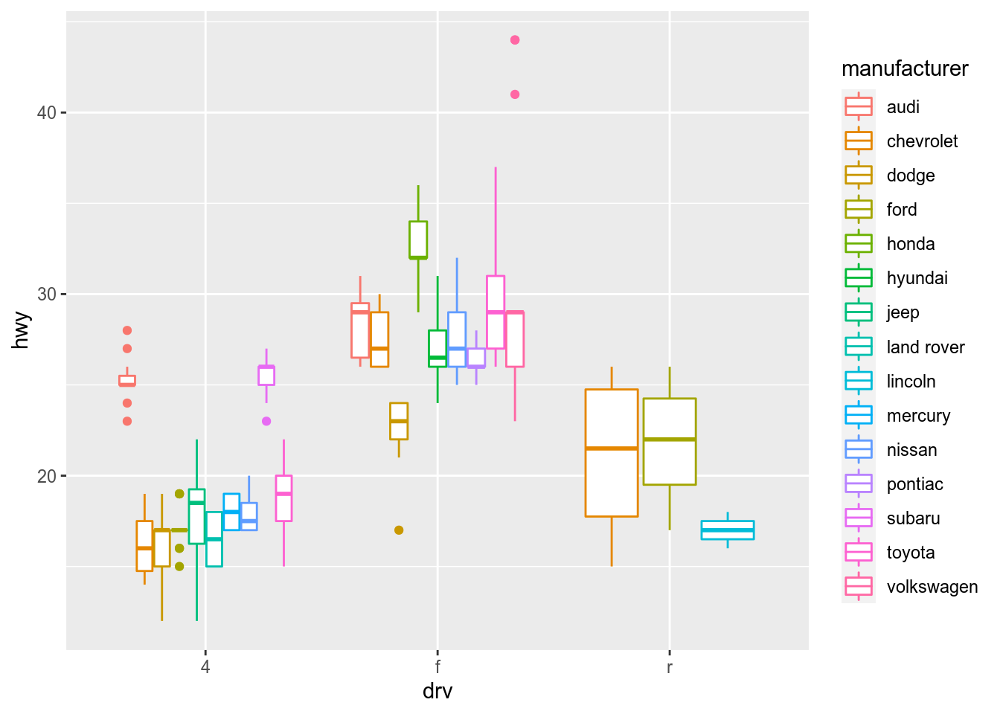
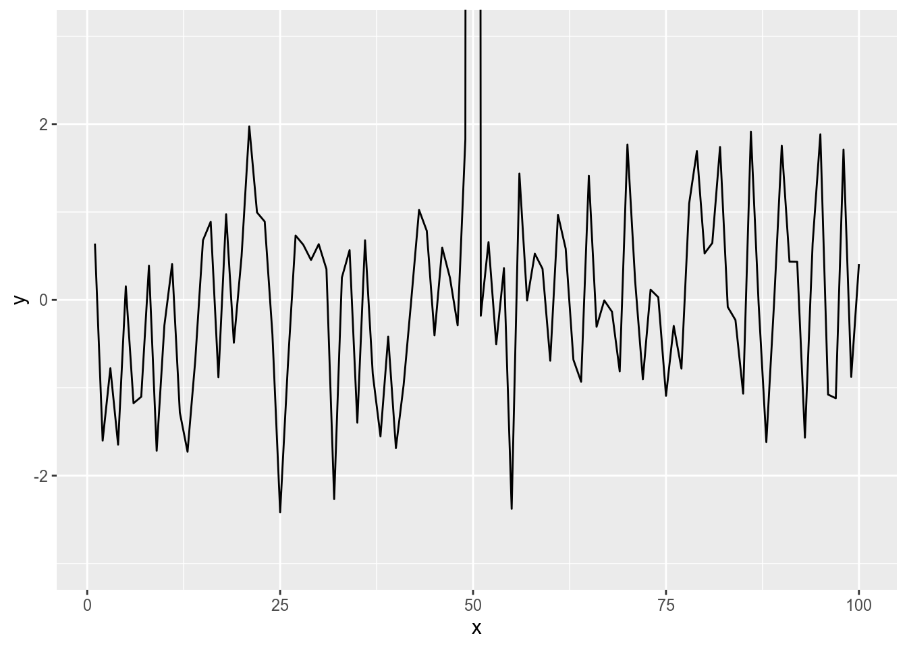
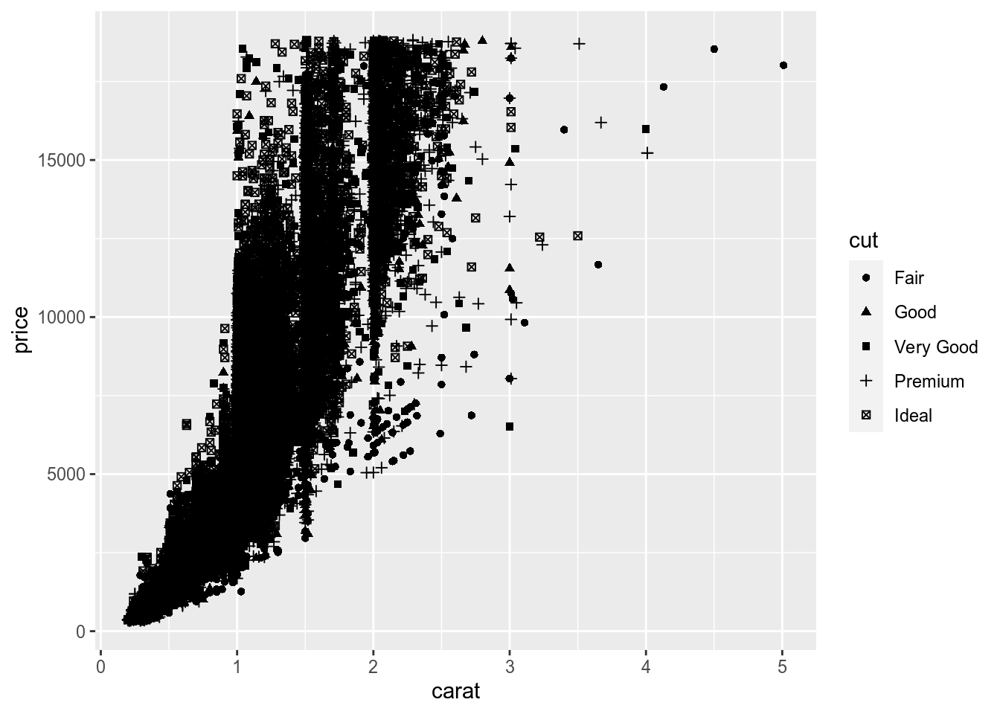
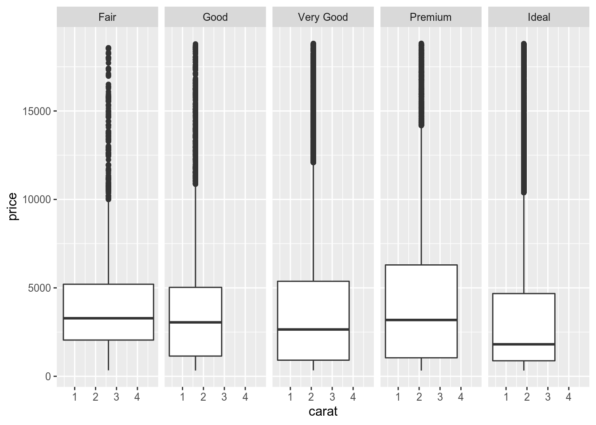

Exploratory Data Analysis Course - Module 2
- 1 The Lattice Plotting System.
- 2 Plotting and Color in R.
- 3 The ggplot2 plotting system.
- 3.1 What is ggplot2?
- 3.2 The Basics:
qplot()- 3.2.1 Example dataset.
- 3.2.1.1 ggplot2 “Hello, world!” (a quick scatterplot with automatic geom point).
- 3.2.1.2 Modifying aesthetics (introducing a third variable).
- 3.2.1.3 Adding a geom: introducing a smoother (a geom that is also a statistic) to highlight trends.
- 3.2.1.4 Histograms (one dimensional data, with geom bar by default).
- 3.2.1.5 Boxplots (one dimensional data, with geom boxplot).
- 3.2.1.6 Facets (multiple panels).
- 3.2.1.7 Adding a smoother to each of the panels.
- 3.2.2 Another example: MAACS Cohort Study.
- 3.2.3 Summary of
qplot()
- 3.2.1 Example dataset.
- 3.3 The nitty gritty of
ggplot2.- 3.3.1 Basic components of a
ggplot2plot. - 3.3.2 Building Plots with
ggplot2. - 3.3.3 Example: BMI, PM\(_{2.5}\), Asthma.
- 3.3.4 The question.
- 3.3.5 The suggestion.
- 3.3.6 The outcome we’ll look at.
- 3.3.7 The quick plot.
- 3.3.8 Building up in layers, creating
a
ggplotobject. - 3.3.9 No Plot Yet!
- 3.3.10 First plot with point layer.
- 3.3.11 Adding more layers: smooth.
- 3.3.12 Adding more layers: facets.
- 3.3.13 Annotations.
- 3.3.14 More complex example.
- 3.3.1 Basic components of a
- 3.4
ggplot2extras. - 3.5 Resources
- 4 Session Info.
1 The Lattice Plotting System.
1.1 Overview.
Going back to the overview of this system that we did in Module 1, we can now add the following.
The lattice plotting system in R is a plotting system
that’s different from the base plotting
system and it works very differently.
The lattice plotting system is implemented
using the following packages:
- The lattice package.
- It contains code for producing trellis graphics,
which are independent of the
basegraphics system.
- Includes functions like
xyplot(),bwplot(),levelplot().
- It contains code for producing trellis graphics,
which are independent of the
- The underlying grid package.
- It implements a different graphing system independent of
the
basesystem.
- The lattice package builds on top of
grid package.
- We seldom (rarely) call functions from the grid package directly.
- It implements a different graphing system independent of
the
One main difference between lattice and
base plotting systems:
- The
latticeplotting system does not have a “two-phase” aspect with separate plotting and annotation like inbaseplotting.
- All plotting/annotation is done at once
with a single function call, like
xplot()for instance.- So we have to specify all the details within that function
call because we won’t have a chance really to annotate it
afterwards.
- So we have to specify all the details within that function
call because we won’t have a chance really to annotate it
afterwards.
- A consecuence of this main difference is that aspects like margins and spacing are automatically handled and defaults are usually sufficient.
Another main difference between lattice
and base plotting systems:
- As we’ll see,
latticefunctions don’t plot data directly to the graphics device as likebasefunctions do. Instead, they return atrellisobject and then print methods forlatticefunctions actually send the plot to the graphics device.
The main advantages of lattice.
- Lattice plots tend to be most useful for conditioning types
of plots, i.e. looking at how
ychanges withxacross levels ofz(withzbeing a categorical variable of our data).
- This system is also very good for putting many many plots on
a screen at once, allowing to look at
multi-dimensional data in a glance.
- In the
baseplotting system it was possible to put multiple plots on the same graphics device using themfrowormfcallarguments, and make panels and plots to look at many different features.
- Well, the
latticeplotting system is designed to optimize that type of very high density plots.
- In fact, with
latticepanel functions can be specified/customized to modify what is plotted in each of the plot panels.
- In the
The main downsides of lattice.
- Annotation in panels in plots is not especially intuitive and can be
difficult to explain.
- In particular, the use of custom panel functions and subscripts can be difficult to wield and requires intense preparation.
1.2 List of the main lattice functions.
library(lattice)xyplot.- this is the main function for creating
scatterplots.
- this is the main function for creating
scatterplots.
bwplot.- box-and-whiskers plots (“boxplots”).
- box-and-whiskers plots (“boxplots”).
histogram.- for histograms.
- for histograms.
stripplot.- like a boxplot but with actual points.
- like a boxplot but with actual points.
dotplot.- plot dots on “violin strings”.
- plot dots on “violin strings”.
splom.- scatterplot matrix;
- like
pairsin base plotting system.
- scatterplot matrix;
levelplot,contourplot.- for plotting “image” data.
1.3 The
xyplot() function.
str(xyplot)
function (x, data, ...) First argument.
Lattice functions generally take a formula for their first argument, usually of the form:
xyplot(y ~ x | f * g, data)- We use the formula notation here, hence the
~.
- On the left of the
~is the y-axis variable.
- On the right is the x-axis variable.
fandgare conditioning variables (they are optional).- These variables are categorical variables that we
condition on.
- The idea is that we want to look at the scatterplot of
yandxfor every level of f and g (of course we can only use one categorical variable).
- The
*indicates an interaction between two variables.
- Remember we said that lattice is good for plotting multivariate data: that’s where these conditioning variables come into play.
- These variables are categorical variables that we
condition on.
Second argument.
The second argument is the data frame or list from which the variables in the formula should be looked up.
- If no data frame or list is passed, then the parent frame is used (R will look in our workspace for the variables to plot).
Ellipsis
If no other arguments are passed, there are defaults that can be used.
1.4 Simple lattice plots.
1.4.1 Very basic one.
library(datasets)
xyplot(Ozone ~ Wind, data = airquality)- This basic scatterplot looks very much like a scatterplot in the
base plotting system.
- Notice that the defaults are a little bit
different, though.
- It does use open circles, but they’re colored blue by default.
1.4.2 Using some of the
same base graphical parameters.
We can use some of the same graphical parameters
(e.g., pch and col) that we used in the
base package in calls to lattice functions.
xyplot(Ozone ~ Wind, data = airquality,
col = "red", pch = 8, main = "Big Apple Data")1.4.3 Using a
conditioning variable and the layout parameter.
xyplot(Ozone ~ Wind | as.factor(Month), data = airquality, layout = c(5, 1))- Because we want to use
Monthas a conditioning variable, we first convert it into a categorical one.
- Then we plot
OzoneversusWindbyMonth. In other words, we want to look at the relationship betweenOzoneandWindfor each level ofMonth(month goes from five to nine, so from the month of May to the month of September).
- This relationship appears to change across the months.
- There doesn’t appear to be much relationship in May or June.
- But in in July and August, there’s a relatively strong relationship.
There is a negative one there, so more wind means less
ozone.
- And we can see by September that relationship is starting to die
down a little bit.
- There doesn’t appear to be much relationship in May or June.
- So, one of the power of the
xyplotfunction in lattice is that we can make these multidimensional panels very simply with just a single function call.- In the base plotting system, there would’ve been many, many function calls to create this plot.
What happens if we use a conditioning variable that is not a factor?
xyplot(Ozone ~ Wind | Month, data = airquality, layout = c(5, 1))- Not as informative, right?
- The word Month in each panel really doesn’t tell us much if it
doesn’t identify which month it’s plotting.
- Notice that the actual data is the same between the two plots, though.
1.5 Lattice behaviour: returning a plot object.
Lattice functions behave differently
from base graphics functions in one critical
way.
Basegraphics functions plot data directly to the graphics device (screen, PDF file, etc.).Latticegraphics functions return an object of classtrellis.The print methods for
latticefunctions actually do the work of plotting the data on the graphics device.So there is a two-stage aspect here, but most of the time this aspect is invisible to the user.
Latticefunctions return “plot objects” that can, in principle, be stored (but it’s usually better to just save the code + data).On the command line,
trellisobjects are auto-printed so that it appears the function is plotting the data.
p <- xyplot(Ozone ~ Wind, data = airquality) # Nothing happens!
print(p) # Plot appears.
- If we just call
xyplotwithout saving the plot object that it returns, then the auto-printing feature of R scatters.
1.6 Properties of a
trellis object.
trel_ppties <- names(p)
trel_ppties
[1] "formula" "as.table" "aspect.fill"
[4] "legend" "panel" "page"
[7] "layout" "skip" "strip"
[10] "strip.left" "xscale.components" "yscale.components"
[13] "axis" "xlab" "ylab"
[16] "xlab.default" "ylab.default" "xlab.top"
[19] "ylab.right" "main" "sub"
[22] "x.between" "y.between" "par.settings"
[25] "plot.args" "lattice.options" "par.strip.text"
[28] "index.cond" "perm.cond" "condlevels"
[31] "call" "x.scales" "y.scales"
[34] "panel.args.common" "panel.args" "packet.sizes"
[37] "x.limits" "y.limits" "x.used.at"
[40] "y.used.at" "x.num.limit" "y.num.limit"
[43] "aspect.ratio" "prepanel.default" "prepanel" - We see that the trellis object
phas 45 named properties, the first of which is “formula” which isn’t too surprising.
- A lot of these properties are probably NULL in value.
Let’s see how many of them are not NULL:
Null_tp <- sapply(p, is.null)
table(!Null_tp)
FALSE TRUE
16 29
trel_ppties[!Null_tp]
[1] "formula" "as.table" "aspect.fill"
[4] "panel" "skip" "strip"
[7] "strip.left" "xscale.components" "yscale.components"
[10] "axis" "xlab" "ylab"
[13] "xlab.default" "ylab.default" "x.between"
[16] "y.between" "index.cond" "perm.cond"
[19] "condlevels" "call" "x.scales"
[22] "y.scales" "panel.args.common" "panel.args"
[25] "packet.sizes" "x.limits" "y.limits"
[28] "aspect.ratio" "prepanel.default" - 29 nonNull values for one little plot!
- Note that a lot of them are like the ones we saw
in the
baseplotting system.
Let’s look at the values of some of them:
p[["formula"]]
Ozone ~ Wind
p[["x.limits"]] # range of the x values
[1] 0.37 22.031.7 Lattice panel functions.
Lattice functions have a panel function which controls what happens inside each panel of the plot.
The
latticepackage comes with default panel functions, but we can supply our own if you want to customize what happens in each panel.Panel functions receive the x/y coordinates of the data points in their panel (along with any optional arguments).
Each panel’s going to represent a subset of the data, which is defined by the conditioning variable that we give it.
So, for each panel, the panel function will get the x/y coordinates of the points that are in that panel.
1.7.1 An example of a
custom panel function given to the panel argument (adding a
median line in each panel).
Let’s start making a plot with two panels (using a conditioning factor variable with two levels).
set.seed(10)
x <- rnorm(100)
f <- rep(0:1, each = 50)
table(f)
f
0 1
50 50
y <- x + f - f * x + rnorm(100, sd = 0.5)
f <- factor(f, labels = c("Group 1", "Group 2"))
table(f)
f
Group 1 Group 2
50 50
xyplot(y ~ x | f, layout = c(2, 1)) ## Plot with 2 panels- Note that we’re not providing an explicit data
argument, so
xyplotwill look in the environment fory,xandf.
- In Group 1, it looks like a strong linear relationship.
- In Group 2, it looks like there’s no relationship.
Now let’s call a custom panel function, via the
panel argument:
- We give to that argument a function whose first two arguments are
xandy, and then followed by anellipis(any other arguments that may get passed).
## Custom panel function
xyplot(y ~ x | f, panel = function(x, y, ...) {
panel.xyplot(x, y, ...) ## First call the default panel function for 'xyplot'
panel.abline(h = median(y), lty = 2) ## Add a horizontal line at the median
})
- In our custom panel function, the first thing we do is call
the default
xyplotpanel function to make the points, the axis labels, etc appear in each panel.
- Then our customization is just addign a horizontal -dashed- line at each panel, which is the median of the y values in that panel.
1.7.2 Another example: adding a regression line in each panel.
## Custom panel function
xyplot(y ~ x | f, panel = function(x, y, ...) {
panel.xyplot(x, y, ...) ## First call default panel function
panel.lmline(x, y, col = 2) ## Overlay a simple linear regression line
})
- The regression line shows us the linear relationship
between
xandywithin each of the panels.
- The
panel.lmline()function adds the regression line to the panel.
1.8 Many panel lattice plot
1.8.1 MAACS example.
As a final example, let’s take this very large dataset:
Ahluwalia et al., Journal of Allergy and Clinical Immunology, 2013
- Study:
- Mouse Allergen and Asthma Cohort Study (MAACS).
- Mouse Allergen and Asthma Cohort Study (MAACS).
- Study subjects:
- The study was aimed at characterizing the indoor (home) environment
and its relationship with asthma morbidity amonst children aged 5–17
living in Baltimore. The children all had persistent asthma, defined as
having had an exacerbation in the past year.
- The study was aimed at characterizing the indoor (home) environment
and its relationship with asthma morbidity amonst children aged 5–17
living in Baltimore. The children all had persistent asthma, defined as
having had an exacerbation in the past year.
- Design:
- Observational study, baseline home visit every 3 months for a year
(so for a total of 5 visits for a year: the initial visit -number zero-,
and other 4 visits every 3 month -visits number one, two, three and
four).
- Observational study, baseline home visit every 3 months for a year
(so for a total of 5 visits for a year: the initial visit -number zero-,
and other 4 visits every 3 month -visits number one, two, three and
four).
- Question:
- How does indoor airborne mouse allergen vary over time and across
subjects?
- So what we want to do is basically make a plot of
the airborne indoor mouse allergen for every
subject for every visit.
- There are 150 subjects in this data set, and they each have five
visits.
- So there are going to be 750 data points here that we want to look at.
- There are 150 subjects in this data set, and they each have five
visits.
- How does indoor airborne mouse allergen vary over time and across
subjects?
And a very easy way to see that is use xyplot and use a
multi-panel lattice plot.
env <- readRDS("4_data/maacs_env.rds")
env <- transform(env, MxNum = factor(MxNum))
xyplot(log2(airmus) ~ VisitNum | MxNum, data = env,
strip = FALSE, pch = 20,
xlab = "Visit Number", ylab = expression(Log[2] * " Airborne Mouse Allergen"),
main = "Mouse Allergen and Asthma Cohort Study (Baltimore City)")- The panels are all the subjects in the study, each with their
airborne mouse allergen levels (the log of their airborne mouse allergen
levels).
- We can see the variation within a person, within each panel; we can
see that their allergen levels can go up or down, or can vary from visit
to visit.
- Some subjects have a lot of variations, so they go up and down a lot
between visits. And some have almost no variation at all, and every
visit is the same level of mouse allergen.
- So we may or may not want to follow up on some of these patterns,
depending on what exactly we’re interested in.
- Some subjects have a lot of variations, so they go up and down a lot
between visits. And some have almost no variation at all, and every
visit is the same level of mouse allergen.
- We can see the variation across subjects.
- Some people have just very high levels, and some people just have
generally lower levels (kind of cross sectional variation).
- Some people have just very high levels, and some people just have
generally lower levels (kind of cross sectional variation).
- We can see that a number of people have missing values, so not
everyone has five values, some people only have two values or one value.
- So it may be useful to follow up on those subjects to see why this subject only have four values or three values.
In conclusion: with essentially one or two function call, we can make a massive plot like this, look at a lot of data without having to go through a lot of code.
1.8.2 Diamonds example.
The diamonds dataset comes with the ggplot2
package, so we load this package here to make that dataset
available.
library(ggplot2)
str(diamonds)
tibble [53,940 × 11] (S3: tbl_df/tbl/data.frame)
$ carat : num [1:53940] 0.23 0.21 0.23 0.29 0.31 0.24 0.24 0.26 0.22 0.23 ...
$ cut : Ord.factor w/ 5 levels "Fair"<"Good"<..: 5 4 2 4 2 3 3 3 1 3 ...
$ color : Ord.factor w/ 7 levels "D"<"E"<"F"<"G"<..: 2 2 2 6 7 7 6 5 2 5 ...
$ clarity: Ord.factor w/ 8 levels "I1"<"SI2"<"SI1"<..: 2 3 5 4 2 6 7 3 4 5 ...
$ depth : num [1:53940] 61.5 59.8 56.9 62.4 63.3 62.8 62.3 61.9 65.1 59.4 ...
$ table : num [1:53940] 55 61 65 58 58 57 57 55 61 61 ...
$ price : int [1:53940] 326 326 327 334 335 336 336 337 337 338 ...
$ x : num [1:53940] 3.95 3.89 4.05 4.2 4.34 3.94 3.95 4.07 3.87 4 ...
$ y : num [1:53940] 3.98 3.84 4.07 4.23 4.35 3.96 3.98 4.11 3.78 4.05 ...
$ z : num [1:53940] 2.43 2.31 2.31 2.63 2.75 2.48 2.47 2.53 2.49 2.39 ...
$ car2 : Factor w/ 3 levels "(0.2,0.5]","(0.5,1]",..: 1 1 1 1 1 1 1 1 1 1 ...
table(diamonds$color)
D E F G H I J
6775 9797 9542 11292 8304 5422 2808
table(diamonds$color, diamonds$cut)
Fair Good Very Good Premium Ideal
D 163 662 1513 1603 2834
E 224 933 2400 2337 3903
F 312 909 2164 2331 3826
G 314 871 2299 2924 4884
H 303 702 1824 2360 3115
I 175 522 1204 1428 2093
J 119 307 678 808 896
xyplot(price ~ carat | color * cut, data = diamonds,
strip = FALSE, pch = 20,
xlab = "Carat", ylab = "Price",
main = "Diamonds are Sparkly!")- 35 panels, one for each combination of color and cut.
- The dots show how prices for the diamonds in each category (panel) vary depending on carat.
1.8.3 The
strip argument.
This argument labels each panel, so it can be kind of inconvinient to allow labels in a graphic with many many panels.
xyplot(price ~ carat | color * cut, data = diamonds,
pch = 20,
xlab = "Carat", ylab = "Price",
main = "Diamonds are Sparkly!")2 Plotting and Color in R.
This is a add-on section to the basic and
lattice plotting systems.
- It really supplements plotting with those packages which contain
functions that are able to take the argument
col.
The default color schemes for most plots in R are horrendous.
R has much better ways for handling the specification of colors in plots and graphs and we should make use of them when possible.
- But, in order to do that, it’s important to know a little about how colors work in R.
2.1 Colors 1, 2 and 3.
Quite often, with plots made in R, you’ll see something like the following Christmas- themed plot.
set.seed(19)
x <- rnorm(30)
y <- rnorm(30)
plot(x, y, col = rep(1:3, each = 10), pch = 19)
legend("bottomright", legend = paste("Group", 1:3), col = 1:3,
pch = 19, bty = "n")- The reason is simple. In R:
- the black color is denoted by
col = 1in most plotting functions;
- the red color is denoted by
col = 2, and
- the green color is denoted by
col = 3.
- the black color is denoted by
- So if we’re plotting multiple groups of things, it’s natural to plot
them using colors 1, 2, and 3 (
col = 1:3orcol = c(1:3).
2.2 Another set of common
color schemes: heat.colors() and topo.colors()
functions.
Here’s another set of common color schemes used in
R, this time via the image() function.
par(mfrow = c(1, 2))
image(volcano, col = heat.colors(10), main = "heat.colors()")
image(volcano, col = topo.colors(19), main = "topo.colors()")- These are two color palettes that come with the
grDevicespackage available to us.
- The left shows you some colors from the function
heat.colors.- Here low values are represented in red and as the
values increase the colors move through yellow towards white.
- This is consistent with the physical properties of
fire.
- Here low values are represented in red and as the
values increase the colors move through yellow towards white.
- The right display is from the function
topo.colors.- It uses topographical colors ranging from blue (low values) towards brown (higher values).
2.3 Connecting colors with data.
Typically we add color to a plot, not to improve its artistic value, but to add another dimension to the visualization (i.e. to escape flatland).
Therefore, it makes sense that the range and palette of colors we use will depend on the kind of data you are plotting.
- While it may be common to just choose colors at random,
choosing the colors for our plot should require
careful consideration.
- Because careful choices of plotting color can have an impact on how people interpret our data and draw conclusions from them.
2.4 Color utilities in R.
R has a number of utilities for dealing with colors and color palettes in our plots.
For starters, the grDevices package has two
functions:
colorRamp():- It takes a palette of colors.
- And returns a function that takes
values between 0 and 1:
- The
0and1correspond to the extremes of the color palette.
- Arguments
between 0 and 1return blends of these extremes.
- The
- A similar function that already exists in R is the
gray()function.- The
gray()function interpolates between black and white, it gives us all the shades of gray between black and white.
- The
- The
colorRamp()function is a generalization of thegray()function because it will take any set of colors in our palette and it will give us a function back that takes numbers between 0 and 1 to interpolate between the extremes of the color palette.
- It takes a palette of colors.
colorRampPalette():- It takes a palette of colors.
- And returns a function that takes
integer argument and returns a vector of colors interpolating
the palette.
- So it’s similar to the
heat.colors()ortopo.colors()functions.
- It takes a palette of colors.
- Both of these functions take palettes of colors and
help to interpolate between the colors on the palette.
- Imagine you’re a painter and you have your palette in your
hand.
- On your palette are a set of colors, say red and blue.
- Now, between red and blue you can a imagine an entire spectrum of
colors that can be created by mixing together different amounts of read
and blue.
- Both
colorRamp()andcolorRampPalette()handle that “mixing” process for you.
- Imagine you’re a painter and you have your palette in your
hand.
- They differ only in the type of object that they return.
Finally, the function colors() lists
the names of colors we can use in any plotting function.
- There are 657 predifined colors we can use in any plotting function.
sample(colors(), 10)
[1] "lightsalmon3" "grey97" "grey6"
[4] "lightyellow1" "deeppink" "goldenrod3"
[7] "navajowhite4" "paleturquoise" "palevioletred1"
[10] "lightgoldenrodyellow"2.4.1
colorRamp().
Let’s start with a simple palette of “red” and “blue” colors.
pal <- colorRamp(c("red", "blue")) # pal is a function.
pal
function (x)
roundcolor(cbind(palette[[1L]](x), palette[[2L]](x), palette[[3L]](x),
if (alpha) palette[[4L]](x))) * 255
<bytecode: 0x55ab965aa398>
<environment: 0x55ab965ad438>
# red.
pal(0)
[,1] [,2] [,3]
[1,] 255 0 0
# blue.
pal(1)
[,1] [,2] [,3]
[1,] 0 0 255
# purple-ish
pal(0.5)
[,1] [,2] [,3]
[1,] 127.5 0 127.5- So,
palis in fact a function that was returned bycolorRamp().
- When we call
pal(0)we get a 1 by 3 matrix.
- The numbers in the matrix will range from 0 to 255 and
indicate the quantities of red, green
and blue (RGB) in columns 1, 2 and
3, respectively.
- RGB color encoding is commonly used in televisions
and monitors.
- In R, 24 bits are used to represent colors.
- Think of these 24 bits as 3 sets of 8 bits, each of
which represents an intensity for one of the colors red,
green, and blue.
- In R, 24 bits are used to represent colors.
- Simple math tells us there are over 16 million colors that
can be expressed in this way.
- Calling
pal(0)gives us the maximum value (255) on red and 0 on the other colors. So this is just the color red.
We can pass any value between 0 and 1 to
the pal() function.
We can also pass a sequence of numbers to
the pal() function.
pal(seq(0, 1, len = 10))
[,1] [,2] [,3]
[1,] 255.00000 0 0.00000
[2,] 226.66667 0 28.33333
[3,] 198.33333 0 56.66667
[4,] 170.00000 0 85.00000
[5,] 141.66667 0 113.33333
[6,] 113.33333 0 141.66667
[7,] 85.00000 0 170.00000
[8,] 56.66667 0 198.33333
[9,] 28.33333 0 226.66667
[10,] 0.00000 0 255.00000- We see that the i-th row (for i=1,…,10) differs from the (i-1)-st
row in the following way.
- Its red entry is 28,3333 = 255/9 points lower and its blue entry is
28,3333 points higher.
- In this example none of pal’s outputs will ever contain green since
it wasn’t in our initial palette.
- Its red entry is 28,3333 = 255/9 points lower and its blue entry is
28,3333 points higher.
- The idea here is that
colorRamp()gives us a function that allows us to interpolate between the two colors red and blue.
We do not have to provide just two colors in our initial color palette.
- We can start with multiple colors and
colorRamp()will interpolate between all of them.
2.4.2
colorRampPallete().
The colorRampPalette() function is similar to
colorRamp(), however the function that
it returns gives us a fixed number of colors that
interpolate the palette.
- The function returned by
colorRampPallete(), takes an integer argument specifing the number of interpolated colors to return.
pal <- colorRampPalette(c("red", "yellow"))
pal
function (n)
{
x <- ramp(seq.int(0, 1, length.out = n))
if (ncol(x) == 4L)
rgb(x[, 1L], x[, 2L], x[, 3L], x[, 4L], maxColorValue = 255)
else rgb(x[, 1L], x[, 2L], x[, 3L], maxColorValue = 255)
}
<bytecode: 0x55ab96ae8fb0>
<environment: 0x55ab96aebc60>
# Just return red an yellow (the extremes of the pallete).
pal(2)
[1] "#FF0000" "#FFFF00"- Each element of the returned vector is a 24 bit
number, represented as 6 hexadecimal characters,
which range from 0 to F. This set of 6 hex characters represents the
intensities of red, green and blue,
2 characters for each color after the # symbol:
- the first two characters indicate the red amount;
- the second two the green amount, and
- the last two the blue amount.
- Because each position can have 16 possible
values (0-9 and A-F), the two positions together allow for 256
possibilities per color.
- In this example above, since we only asked for two colors, it gave us red and yellow, the two extremes of the palette.
We can ask for more colors though.
# Return 10 colors between red an yellow.
pal(10)
[1] "#FF0000" "#FF1C00" "#FF3800" "#FF5500" "#FF7100" "#FF8D00" "#FFAA00"
[8] "#FFC600" "#FFE200" "#FFFF00"- The first color is still red (“FF” in the red position) and the last
color is still yellow (“FF” in both the red and green positions).
- But now there are 8 more colors in between.
These values, in hexadecimal format, can also be specified to base plotting functions via the col argument.
2.4.3
rgb()
The heart of the function returned by colorRamp() and
colorRampPalette()is really the call to the function
rgb().
str(rgb)
function (red, green, blue, alpha, names = NULL, maxColorValue = 1) - The
rgb()function can be used to produce any color via red, green, blue proportions (numbers between 0 and 1) and return a hexadecimal representation.
- That hexadecimal representation can be passed to other functions,
like
image()orplot().
rgb(0, 0, 234, maxColorValue = 255)
[1] "#0000EA"2.5
RColorBrewer package.
Part of the art of creating good color schemes in data graphics is to
start with an appropriate color
palette that you can then interpolate with a
function like colorRamp() or
colorRampPalette().
One package on CRAN that contains interesting and useful
color palettes is the RColorBrewer
package.
This packge offers three types of palettes:
- Sequential:
- for numerical data that are ordered.
- for numerical data that are ordered.
- Diverging:
- for numerical data that can be positive or negative, often
representing deviations from some norm or baseline.
- for numerical data that can be positive or negative, often
representing deviations from some norm or baseline.
- Qualitative:
- for qualitative unordered data.
All of these palettes can be used in
conjunction with the colorRamp() and
colorRampPalette().
Here is a display of all the color palettes available from
the RColorBrewer package.
library(RColorBrewer)
display.brewer.all()- The top section shows the sequential
palettes in which the colors are ordered from light to
dark.
- The divergent palettes are at the bottom.
Here the neutral color (white) is in the center, and
as we move from the middle to the two ends of each palette, the colors
increase in intensity.
- The middle display shows the qualitative palettes which look like collections of random colors. These might be used to distinguish factors in our data.
2.5.1 Using the
RColorBrewer palletes: brewer.pal()
function.
The only real function in the
RColorBrewer package is the brewer.pal()
function which has two arguments:
n:- the number of colors we want from the palette (integer);
- this is usually small, it’ll be 2, 3 or 4. We don’t need
many blotches on our palette for the primary colors.
- the number of colors we want from the palette (integer);
name:- the name of the color palette we want to use.
Below we choose to use 3 colors from the “BuGn” palette, which is a sequential palette.
cols <- brewer.pal(3, "BuGn")
cols
[1] "#E5F5F9" "#99D8C9" "#2CA25F"So, those three colors make up our initial palette.
Then we can pass them to
colorRampPalette() to create our
interpolating function.
pal <- colorRampPalette(cols)
# extremes.
pal(2)
[1] "#E5F5F9" "#2CA25F"
# our three initial colors.
pal(3)
[1] "#E5F5F9" "#99D8C9" "#2CA25F"
# 20 colors.
pal(20)
[1] "#E5F5F9" "#DDF1F3" "#D5EEEE" "#CDEBE9" "#C5E8E4" "#BDE5DF" "#B5E2DA"
[8] "#ADDFD5" "#A4DCD0" "#9DD9CB" "#93D5C3" "#87CFB8" "#7CC9AD" "#70C4A1"
[15] "#65BE96" "#59B88B" "#4EB380" "#42AD75" "#37A76A" "#2CA25F"Now we can plot the volcano data using this color
ramp.
- Note that the volcano dataset contains elevations of a volcano, which is continuous, ordered, numerical data, for which a sequential palette is appropriate.
image(volcano, col = pal(20))2.5.2 The
smoothScatter() function for very large datasets.
A function that takes advantage of the color palettes in
RColorBrewer is the smoothScatter()
function.
It is very useful for making scatterplots of very large datasets, and we don’t want to just have a bunch of dots on the screen that are overlapping each other.
It essentially gives us a 2-D histogram of the data using a sequential palette.
- By default, it uses the sequential “Blues” pallete.
set.seed(1)
x <- rnorm(10000)
y <- rnorm(10000)
smoothScatter(x, y)2.6 Adding transparency:
alpha parameter to rgb(),
colorRamp() and colorRampPalette().
Color transparency can be added via the alpha parameter
to produce color specifications with varying levels of transparency.
alpharepresents an opacity level, that is, how transparent should the colors be.
When transparency is used we’ll notice an extra two characters added to the right side of the hexadecimal representation.
- There will be 8 positions instead of 6.
- The hexadecimal representation of a color will have 32 bits (4 groups of 8 bits) instead of 32 bits (3 groups of 8 bits).
For example, if we wanted the color red with a high level of transparency, we could specify:
rgb(1, 0, 0, 0.1)
[1] "#FF00001A"Or a pallet of colors with transparency:
palt <- colorRampPalette(c("blue", "green"), alpha = .5)
palt(5)
[1] "#0000FFFF" "#003FBFFF" "#007F7FFF" "#00BF3FFF" "#00FF00FF"- Notice here values that can assume alpha: since it was NOT
ZERO in the call to
colorRampPalette(), it gets the maximum FF value.
- The same result would happen if alpha had been set to
TRUE.
- When it was 0 or FALSE (as in previous calls to
colorRampPalette()) it was given the value 00 and wasn’t shown.
Transparency can be useful when you have plots with a high density of points or lines.
For example, the scatterplot below has a lot of overplotted points and it’s difficult to see what’s happening in the middle of the plot region.
set.seed(2)
x <- rnorm(2000)
y <- rnorm(2000)
plot(x, y, pch = 19) # The default is black: col = rgb(0, 0, 0)
plot(x, y, pch = 19, col = rgb(0, .5, .5)) # A nice mix of green and blue.
If we add some transparency to the full circles, we can get a better sense of the varying density of the points in the plot.
plot(x, y, pch = 19, col = rgb(0, 0, 0, 0.15))
plot(x, y, pch = 19, col = rgb(0, .5, .5, 0.13))2.7 Summary.
Careful use of colors in plots, images, maps and other data graphics can make it easier for the reader to get what you’re trying to say (why make it harder?).
The
RColorBrewerpackage is an R package that provides color palettes for sequential, categorical, and diverging data.The
colorRamp()andcolorRampPalette()functions can be used in conjunction with color palettes to connect data to colors.Transparency can sometimes be used to clarify plots with many points.
3 The ggplot2 plotting system.
3.1 What is ggplot2?
- It’s an implementation of The Grammar of Graphics as
described by Leland Wilkinson in his book.
- Grammar of graphics represents an abstraction of graphics ideas and
objects, a very powerful concept to organize all kinds of data
graphics.
- Think “verb”, “noun”, “adjective” for graphics.
- The question is what are the verbs, nouns and adjectives of a data
graphic?
- And the Grammar of Graphics describes those basic elements so that
we can put them together to make new types of graphics.
- The question is what are the verbs, nouns and adjectives of a data
graphic?
- It allows then for a “theory” of graphics on which to build new
graphics and graphics objects.
- Just like we could take a verb and a noun and an adjective and make
a new sentence that maybe no one’s ever heard before, we could take the
grammar of graphics and put together various aspects of plots and make a
graphic that no one’s ever seen before.
- Just like we could take a verb and a noun and an adjective and make
a new sentence that maybe no one’s ever heard before, we could take the
grammar of graphics and put together various aspects of plots and make a
graphic that no one’s ever seen before.
- That’s what in general a grammar is useful for: allows for a more
compact summary of the base components of a language, and it allows us
to extend the language and to handle situations that we have not before
seen.
- As Hadley Whickham says in his book, the basic idea is “Shorten the
distance from mind to page”.
- If we have some data that we’re looking at, and we think of a way that we want to visualize that data, we want to be able to rapidly take those ideas and turn them into a picture on our screen.
- Grammar of graphics represents an abstraction of graphics ideas and
objects, a very powerful concept to organize all kinds of data
graphics.
“In brief, the grammar tells us that a statistical graphic is a mapping from data to aesthetic attributes (colour, shape, size) of geometric objects (points, lines, bars). The plot may also contain statistical transformations of the data and is drawn on a specific coordinate system” - from ggplot2 book.
Until recently there was no specific implementation for Grammar of Graphics in R, but Hadley Wickham, who when he was a graduate student at Iowa State University, implemented the Grammar of Graphics as an R package called
ggplotand its current implementation is calledggplot2.It’s a “third” graphics system for R (along with
baseandlattice).- Combines the best of
baseandlattice.
- It allows for multipanel (conditioning) plots (as
latticedoes) but also post facto annotation (asbasedoes), so we can add titles and labels.
- It uses the low-level
gridpackage (which comes with R) to draw the graphics.
- Combines the best of
Available from CRAN via
install.packages().Web site: http://ggplot2.org (better documentation).
3.1.1 A quick example to show the descriptive power of Grammar of Graphics.
Consider the following plot made using base
graphics:
with(airquality, {
plot(Temp, Ozone)
lines(loess.smooth(Temp, Ozone))
})
How would one describe the creation of this plot?
- Well, we could say that we called the
plot()function.
- Then added a loess smoother by calling the
lines()function on the output ofloess.smooth().
So it is difficult to “translate” a plot to others because there’s no formal graphical language. The plot is just a series of R commands.
Here’s the same plot made using ggplot2:
library(ggplot2)
ggplot(airquality, aes(Temp, Ozone)) +
geom_point() +
geom_smooth(method = "loess", se = FALSE)
`geom_smooth()` using formula 'y ~ x'
Warning: Removed 37 rows containing non-finite values (stat_smooth).
Warning: Removed 37 rows containing missing values (geom_point).ggplot2allows for a more elegant way of expressing the components of the plot.
- In this case, the plot is a dataset
(
airquality) with aesthetic mappings derived from theTempandOzonevariables, a set of points, and a smoother.
In a sense, the ggplot2 system takes many of the
cues from the base plotting system and
formalizes them a bit.
The ggplot2 system also takes some cues
from lattice.
- It automatically handles things like margins and
spacing, and also has the concept of “themes” which
provide a default set of plotting symbols and colors.
- The default themes makes many choices for uw, but we can
customize the presentation if we want.
- While
ggplot2bears a superficial similarity to lattice, it is generally easier and more intuitive to use.
3.2 The Basics:
qplot()
The qplot() function (we can think of as standing for
quick plot) is the most basic function and it’s probably the
best place to start for someone who is transitioning from say the base
plotting system.
str(qplot)
function (x, y, ..., data, facets = NULL, margins = FALSE, geom = "auto",
xlim = c(NA, NA), ylim = c(NA, NA), log = "", main = NULL, xlab = NULL,
ylab = NULL, asp = NA, stat = NULL, position = NULL) Works much like the
plot()function inbasegraphics system.It can produce many types of plots (scatter, histograms, box and whisker) while hiding tedious details from the user.
Looks for data in a data frame, similar to
lattice(or in the parent environment).One key difference when using
ggplotfunctions, is that we can only pass data frames to them. Our data have to be organized in a data frame.If we don’t specify a data frame then
qplot(and all the plotting functions) will look for the data in our workspace.But it’s generally a good idea to specify the data frame. That way when we read the code that generated the plot we know exactly where the data came from.
Plots are made up of aesthetics (size, shape, color) and geoms (the objects we are plotting: points, lines, bars).
Factors are important for indicating subsets of the data (if they are to have different properties).
Using factor variables is an important aspect for the qplot function, as well as it is similarly important when we’re using lattice functions.
Factors are very important because they indicate subsets of our data.
For example we might have a factor variable that indicates the gender. So males and females are subsets of our data and we might want to plot a certain relationship divided by those subsets or we might want to color certain points, depending on whether they’re male of female.
The categories that are indicated by various factor variables can be useful for annotating a plot. So, it’s important that factor variables are properly labeled (it’s usually not useful to label a factor variable as 1, 2 and 3, even if we have three categories, we want to label them with more informative labels so that we know what those factor variables are trying to encode).
The more advanced workhorse function in this package is
ggplot(), which is more flexible and can be customized for doing thingsqplot()cannot do.
3.2.1 Example dataset.
The mpg dataset comes with the ggplot2
package and contains data on the fuel economy of 38 popular models of
car from 1999 to 2008.
str(mpg)
tibble [234 × 11] (S3: tbl_df/tbl/data.frame)
$ manufacturer: chr [1:234] "audi" "audi" "audi" "audi" ...
$ model : chr [1:234] "a4" "a4" "a4" "a4" ...
$ displ : num [1:234] 1.8 1.8 2 2 2.8 2.8 3.1 1.8 1.8 2 ...
$ year : int [1:234] 1999 1999 2008 2008 1999 1999 2008 1999 1999 2008 ...
$ cyl : int [1:234] 4 4 4 4 6 6 6 4 4 4 ...
$ trans : chr [1:234] "auto(l5)" "manual(m5)" "manual(m6)" "auto(av)" ...
$ drv : chr [1:234] "f" "f" "f" "f" ...
$ cty : int [1:234] 18 21 20 21 16 18 18 18 16 20 ...
$ hwy : int [1:234] 29 29 31 30 26 26 27 26 25 28 ...
$ fl : chr [1:234] "p" "p" "p" "p" ...
$ class : chr [1:234] "compact" "compact" "compact" "compact" ...- All of the factor variables are appropriately coded with meaningful
labels.
- This will come in handy when
qplot()has to label different aspects of a plot.
- This will come in handy when
- Also note that all of the columns/variables have meaningful (if sometimes abbreviated) names, rather than names like “X1”, and “X2”, etc.
3.2.1.1 ggplot2 “Hello, world!” (a quick scatterplot with automatic geom point).
We can make a quick scatterplot of the engine
displacement (displ) and the highway miles per gallon
(hwy).
qplot(displ, hwy, data = mpg)
- Notice: we didn’t have to specify
geom = "point"because that was done automatically.
- Also, all the labels were automatically provided.
3.2.1.2 Modifying aesthetics (introducing a third variable).
We can introduce a third variable into the plot by modifying the color of the points based on the value of that third variable.
coloris an aesthetic and the color of each point can be mapped to a variable.- In this case we will map the color to the
drvvariable which indicates whether a car is front wheel drive, rear wheel drive, or 4-wheel drive.
- In this case we will map the color to the
- Note that the
x-coordinatesandy-coordinatesare aesthetics too, and they got mapped to thedisplandhwyvariables, respectively.
qplot(displ, hwy, data = mpg, color = drv)- The legend to the right is helpfully supplied by
qplot().
- The colors were automatically
assigned so the legend decodes the colors for us.
- We can see that the front wheel drive cars tend to have lower
displacement relative to the 4-wheel or rear wheel drive cars.
- Also, it’s clear that the 4-wheel drive cars have the lowest highway gas mileage.
3.2.1.3 Adding a geom: introducing a smoother (a geom that is also a statistic) to highlight trends.
Sometimes it’s nice to add a smoother to a scatterplot to highlight any trends.
- Trends can be difficult to see if the data are very noisy or there
are many data points obscuring the view.
- A smooth is a
geomthat we can add along with our data points.- It consist of a trend line that is surrounded by a gray zone representing the 95% confidence intervals for that line.
There are basically two ways to add a geom.
3.2.1.3.1 Adding a geom
using the geom argument to qplot().
Notice that previously, we didn’t have to specify
geom = "point" to qplot()) but now, if we want
the smoother overlayed with the points, then we
need to specify both explicitly.
qplot(displ, hwy, data = mpg, geom = c("point", "smooth"))
`geom_smooth()` using method = 'loess' and formula 'y ~ x'- It seems that engine displacement and highway mileage have a nonlinear U-shaped relationship, but from the previous plot we know that this is largely due to confounding by the drive class of the car.
With the third variable drv mapped to color, adding our
second geom results in the following plot:
qplot(displ, hwy, data = mpg, color = drv, geom = c("point", "smooth"))
`geom_smooth()` using method = 'loess' and formula 'y ~ x'3.2.1.3.2 Adding a geom with the corrisponding geom function.
We can also add a smooth geom, by literally adding it’s
corrisponding geom function: geom_smooth()
qplot(displ, hwy, data = mpg) + geom_smooth()
`geom_smooth()` using method = 'loess' and formula 'y ~ x'
3.2.1.4 Histograms (one dimensional data, with geom bar by default).
The qplot() function can be used to plot
1-dimensional data too.
- By specifying a single variable,
qplot()will by default make a histogram.
Here we make a histogram of the highway mileage data and stratify on the drive class.
- So technically this is three histograms overlayed on top of each other.
qplot(hwy, data = mpg, fill = drv, binwidth = 2)Notice:
The variable we are interested in,
hwy, is mapped to thexparameter.What happens if we only specify the
yparameter?- We wont get an histogram.
- Instead, the function will plot the values of the
yargument in the order in which they occur in the data.
- We wont get an histogram.
qplot(y = hwy, data = mpg, color = drv)- In fact, there are 234 observations in the
mpgdataset (indicated in thexaxis) and each point in the plot represents one of thehwyvalues (indicated by theyaxis).
3.2.1.5 Boxplots (one dimensional data, with geom boxplot).
Having the different colors for each drive class is nice, but the previous three histograms can be a bit difficult to separate out.
Side-by-side boxplots is one solution to this problem.
qplot(drv, hwy, data = mpg, geom = "boxplot")As we saw, equivalently:
qplot(drv, hwy, data = mpg) + geom_boxplot()So, in order to make qplot() plot a
boxplot, we have to:
- Specify the variable we want to examine, in this
case
hwy, as theyvariable.
- And of course tell it that we want the
geom“boxplot.
- Optionally, we can specify the variable by which we
want to split the data as the
xvariable, like we did withdrv.
As an example of the interesting
capabilites of qplot(), let’s add to our previous
boxplot a third variable, manufacturer, mapped to
color aesthetics.
qplot(drv, hwy, data = mpg, geom = "boxplot", color = manufacturer)
- Notice that there are still 3 regions of the plot
(determined by the factor drv).
- Each is subdivided into several boxes depicting different manufacturers.
3.2.1.6 Facets (multiple panels).
Another solution is to plot the histograms in separate panels using facets.
In general, facets are a way to create multiple panels of plots based on the levels of categorical variable.
We can do that using the facets argument to
qplot().
- It expects a formula type of input, with a
∼separating the left hand side variable and the right hand side variable.
- The left hand side variable indicates how the rows
of the panels should be divided.
- The right hand side variable indicates how the columns of the panels should be divided.
Here, we want to see a histogram of the highway mileages
(hwy) and the categorical variable is the drive class
variable (drv). And we want three rows of
histograms (and just one column), one for each drive
class.
- We then specify
drvon the left hand side of the formula.
- And
.on the right hand side indicating that there’s no variable there (it’s empty), that is to say, just one column.
qplot(hwy, data = mpg, facets = drv ~ ., binwidth = 2)Instead of histograms we could look at scatterplots of engine displacement and highway mileage by drive class.
- This time we put the
drvvariable on the right hand side to indicate that we want a column for each drive class (as opposed to splitting by rows like we did above).
qplot(displ, hwy, data = mpg, facets = . ~ drv)3.2.1.7 Adding a smoother to each of the panels.
It’s simple, we just add the geom function geom_smooth()
or use the geom argument to qplot().
qplot(displ, hwy, data = mpg, facets = . ~ drv) + geom_smooth()
`geom_smooth()` using method = 'loess' and formula 'y ~ x'
qplot(displ, hwy, data = mpg, facets = . ~ drv, geom = c("point", "smooth"))
`geom_smooth()` using method = 'loess' and formula 'y ~ x'3.2.2 Another example: MAACS Cohort Study.
Let’s return to the Mouse Allergen and Asthma Cohort Study (MAACS):
- Aimed at characterizing the indoor (home) environment and its
relationship with asthma morbidity amonst children aged 5–17 living in
BaltimorePersistent.
- The children all had persistent asthma, defined as having had an
exacerbation in the past year.
- Representative publication of results: http://goo.gl/WqE9j8
Notice:
- Because the individual-level data for this study are protected by
various U.S. privacy laws, we cannot make those data available.
- For the purposes of this section, we’ll use simulated data that
share many of the same features of the original data, but do not contain
any of the actual measurements or values contained in the original
dataset:
https://github.com/lupok2001/datasciencecoursera/blob/master/maacs.Rda
load(file = "4_data/maacs.Rda")
str(maacs)
'data.frame': 750 obs. of 9 variables:
$ id : int 1 2 3 4 5 6 7 8 9 10 ...
$ eno : num 141 124 126 164 99 68 41 50 12 30 ...
$ duBedMusM : num 2423 2793 3055 775 1634 ...
$ pm25 : num 15.6 34.4 39 33.2 27.1 ...
$ mopos : Factor w/ 2 levels "no","yes": 2 2 2 2 2 2 2 2 2 2 ...
$ logpm25 : num 1.19 1.54 1.59 1.52 1.43 ...
$ NocturnalSympt: int 0 0 2 2 2 2 0 1 0 0 ...
$ bmicat : Factor w/ 2 levels "normal weight",..: 1 2 2 1 1 1 2 2 2 1 ...
$ logno2_new : num 1.62 1.88 1.71 1.46 1.29 ...The key variables are:
mopos:- an indicator of whether the subject is allergic to mouse allergen
(yes/no).
- an indicator of whether the subject is allergic to mouse allergen
(yes/no).
pm25:- average level of PM2.5 over the course of 7 days (micrograms per
cubic meter).
- average level of PM2.5 over the course of 7 days (micrograms per
cubic meter).
eno:- exhaled nitric oxide.
3.2.2.1 Histogram of eNO.
The outcome of interest for this analysis will be exhaled nitric oxide (eNO), which is a measure of pulmonary inflamation.
We can get a sense of how eNO is distributed in this population by making a quick histogram of the variable.
- Here, we take the log of eNO because some right-skew in the data.
qplot(log(eno), data = maacs)
`stat_bin()` using `bins = 30`. Pick better value with `binwidth`.
Warning: Removed 108 rows containing non-finite values (stat_bin).- A quick glance suggests that the histogram is a bit “fat”, suggesting that there might be multiple groups of people being lumped together.
3.2.2.2 Histogram by Group.
We can stratify the histogram by whether they are allergic to mouse.
qplot(log(eno), data = maacs, fill = mopos)
`stat_bin()` using `bins = 30`. Pick better value with `binwidth`.
Warning: Removed 108 rows containing non-finite values (stat_bin).- We can see from this plot that the non-allergic subjects
are shifted slightly to the left, indicating a lower eNO and
less pulmonary inflammation.
- That said, there is significant overlap between the two groups.
3.2.2.3 Density Smoother (geom density).
An alternative to histograms is a density smoother, which sometimes can be easier to visualize when there are multiple groups.
Here is a density smooth of the entire study population.
qplot(log(eno), data = maacs, geom = "density")
Warning: Removed 108 rows containing non-finite values (stat_density).And here are the densities straitified by allergic status.
- We can map the color aesthetic to the
moposvariable.
qplot(log(eno), data = maacs, geom = "density", color = mopos)
Warning: Removed 108 rows containing non-finite values (stat_density).- These tell the same story as the stratified histograms, which sould come as no surprise.
3.2.2.4 Scatterplots: eNO vs. PM\(_{2.5}\)
Now we can examine the indoor environment and its relationship to eNO.
- Here, we use the level of indoor PM2.5 as a measure of indoor environment air quality.
We can make a simple scatterplot of PM2.5 and eNO.
qplot(log(pm25), log(eno), data = maacs, geom = c("point", "smooth"))
`geom_smooth()` using method = 'loess' and formula 'y ~ x'
Warning: Removed 184 rows containing non-finite values (stat_smooth).
Warning: Removed 184 rows containing missing values (geom_point).- The relationship appears modest at best, as there is substantial noise in the data.
However, one question that we might be interested in is whether allergic individuals are prehaps more sensitive to PM2.5 inhalation than non-allergic individuals.
To examine that question we can stratify the data into two groups.
This first plot uses different plot symbols
for the two groups and overlays them on a single canvas, by
mapping the mopos variable to the
shape aesthetic.
qplot(log(pm25), log(eno), data = maacs, shape = mopos)
Warning: Removed 184 rows containing missing values (geom_point).- Because there is substantial overlap in the data it is a
bit challenging to discern the circles
from the triangles.
- Part of the reason might be that all of the symbols are the same color (black).
We can make a second plot mapping to each group a different color to see if that helps.
qplot(log(pm25), log(eno), data = maacs, color = mopos)
Warning: Removed 184 rows containing missing values (geom_point).- This is slightly better but the substantial overlap makes it difficult to discern any trends in the data.
For trends we need to add a smoother of some sort.
- Here we add a linear regression line (a type of smoother) to each group to see if there’s any difference.
qplot(log(pm25), log(eno), data = maacs, color = mopos) +
geom_smooth(method = "lm")
`geom_smooth()` using formula 'y ~ x'
Warning: Removed 184 rows containing non-finite values (stat_smooth).
Warning: Removed 184 rows containing missing values (geom_point).- Finally we see quite clearly that the red group and
the green group exhibit rather different relationships
between PM2.5 and eNO.
- For the non-allergic individuals, there appears to be a
slightly negative relationship between PM2.5 and
eNO.
- For the allergic individuals, there is a
positive relationship.
- This suggests a strong interaction between PM2.5 and allergic status, an hypothesis perhaps worth following up on in greater detail than this brief exploratory analysis.
Another, and perhaps more clear, way to visualize
this interaction is to use separate panels for the
non-allergic and allergic individuals using the facets
argument to qplot().
qplot(log(pm25), log(eno), data = maacs, facets = . ~ mopos) +
geom_smooth(method = "lm")
`geom_smooth()` using formula 'y ~ x'
Warning: Removed 184 rows containing non-finite values (stat_smooth).
Warning: Removed 184 rows containing missing values (geom_point).3.2.3 Summary of
qplot()
- The
qplot()function is a simple function that you can use to make very quick plots.
- It is the analog to
plot()but with many built-in features.- If we want to color code subsets of the data, it’s very easy to
do.
- If we want to split out different panels, that’s also very easy to
do with the facets.
- We can choose different plotting symbols with the shape
argument.
- If we want to color code subsets of the data, it’s very easy to
do.
- Syntax somewhere in between
base/lattice.
- Produces very nice graphics, essentially publication ready (if you
like the design).
- If we don’t, if there are features we don’t like or we don’t like
the design of a particular function, it’s a little bit tricky to modify
the
qplot()function to suit your needs.
- If we want to do a lower level customization of different aspects of
the plot, we really have to go into the guts of the
ggplot()function, and that’s something that we discuss in the next section.
- If we don’t, if there are features we don’t like or we don’t like
the design of a particular function, it’s a little bit tricky to modify
the
3.3 The nitty gritty of
ggplot2.
In this section we’ll get into a little more of the nitty gritty of:
how
ggplot2builds plots, andhow we can customize various aspects of any plot.
It’s worth knowing the underlying details of how ggplot2 works so that we can really exploit its power.
3.3.1 Basic components of
a ggplot2 plot.
Here are a few of the more commonly used components of a
ggplot2 plot:
- A data frame:
- stores all of the data that will be displayed on the plot.
- stores all of the data that will be displayed on the plot.
- aesthetic mappings:
- describe how data are mapped to color, size, shape, location.
- describe how data are mapped to color, size, shape, location.
- geoms:
- geometric objects like points, lines, shapes.
- geometric objects like points, lines, shapes.
- facets:
- describes how conditional/panel plots should be constructed.
- describes how conditional/panel plots should be constructed.
- stats:
- statistical transformations like binning, quantiles,
smoothing.
- statistical transformations like binning, quantiles,
smoothing.
- scales:
- scales are to find how the different variables are coded, in terms
of the plot;
- for example, we might have a binary variable that represents sex. So
we let the males will be red and the females blue, or something like
that (that is a scaling for a particular type of dichotomous
variable).
- scales are to find how the different variables are coded, in terms
of the plot;
- coordinate system:
- describes the system in which the locations of the geoms will be drawn.
It’s essential that:
We properly organize our data into a data frame before we start with
ggplot2.In particular, it’s important that we provide all of the appropriate metadata so that our data frame is self-describing and our plots will be self-documenting.
3.3.2 Building Plots with
ggplot2.
When building plots in ggplot2(), rather than using
qplot(), the “artist’s palette” model may
be the closest analogy.
Plots are built up in layers, with the typically ordering being:
- Plot the data.
- Overlay a summary (for instance, a regression line or
smoother).
- Add metadata and annotation.
3.3.3 Example: BMI, PM\(_{2.5}\), Asthma.
To demonstrate the various pieces of ggplot2 we will use
as running example the Mouse Allergen and Asthma Cohort Study (MAACS),
which we already described before.
3.3.4 The question.
Here, the question we are interested in is:
“Are overweight individuals, as measured by body mass index (BMI), more susceptible than normal weight individuals to the harmful effects of PM2.5 on asthma symptoms?”
In other words:
Does BMI (normal vs. overweight) modify the relationship between PM\(_{2.5}\) and asthma symptoms?
3.3.5 The suggestion.
There is a suggestion that overweight individuals may be more susceptible to the negative effects of inhaling PM2.5.
This would suggest that increases in PM2.5 exposure in the home of an overweight child would be more deleterious to his/her asthma symptoms than they would be in the home of a normal weight child.
We want to see if we can see that difference in the data from MAACS.
3.3.6 The outcome we’ll look at.
load(file = "4_data/maacs.Rda")
str(maacs)
'data.frame': 750 obs. of 9 variables:
$ id : int 1 2 3 4 5 6 7 8 9 10 ...
$ eno : num 141 124 126 164 99 68 41 50 12 30 ...
$ duBedMusM : num 2423 2793 3055 775 1634 ...
$ pm25 : num 15.6 34.4 39 33.2 27.1 ...
$ mopos : Factor w/ 2 levels "no","yes": 2 2 2 2 2 2 2 2 2 2 ...
$ logpm25 : num 1.19 1.54 1.59 1.52 1.43 ...
$ NocturnalSympt: int 0 0 2 2 2 2 0 1 0 0 ...
$ bmicat : Factor w/ 2 levels "normal weight",..: 1 2 2 1 1 1 2 2 2 1 ...
$ logno2_new : num 1.62 1.88 1.71 1.46 1.29 ...The outcome we will look at here, NocturnalSymp, is the
number of days in the past 2 weeks
where the child experienced asthma symptoms
(e.g. coughing, wheezing) while sleeping.
3.3.7 The quick plot.
library(ggplot2)
qplot(logpm25, NocturnalSympt, data = maacs, facets = . ~ bmicat,
geom = c("point", "smooth"), method = "lm")
Warning: Ignoring unknown parameters: method
`geom_smooth()` using formula 'y ~ x'
Warning: Removed 134 rows containing non-finite values (stat_smooth).
Warning: Removed 134 rows containing missing values (geom_point).3.3.8 Building up in
layers, creating a ggplot object.
First we can create a ggplot object
that stores:
- the dataset, and
- the basic aesthetics for mapping the x- and y-coordinates for the plot.
Here we will eventually be plotting the log of PM2.5
(logpm25) and NocturnalSymp variable.
head(maacs)
id eno duBedMusM pm25 mopos logpm25 NocturnalSympt bmicat
1 1 141 2423 15.560 yes 1.192010 0 normal weight
2 2 124 2793 34.370 yes 1.536180 0 overweight
3 3 126 3055 38.953 yes 1.590541 2 overweight
4 4 164 775 33.249 yes 1.521779 2 normal weight
5 5 99 1634 27.060 yes 1.432328 2 normal weight
6 6 68 939 18.890 yes 1.276232 2 normal weight
logno2_new
1 1.617849
2 1.884490
3 1.712953
4 1.458879
5 1.294510
6 1.468377
g <- ggplot(maacs, aes(logpm25, NocturnalSympt))
summary(g)
data: id, eno, duBedMusM, pm25, mopos, logpm25, NocturnalSympt, bmicat,
logno2_new [750x9]
mapping: x = ~logpm25, y = ~NocturnalSympt
faceting: <ggproto object: Class FacetNull, Facet, gg>
compute_layout: function
draw_back: function
draw_front: function
draw_labels: function
draw_panels: function
finish_data: function
init_scales: function
map_data: function
params: list
setup_data: function
setup_params: function
shrink: TRUE
train_scales: function
vars: function
super: <ggproto object: Class FacetNull, Facet, gg>
class(g)
[1] "gg" "ggplot"- We can see above that the object
gcontains the dataset maacs and the mappings.
3.3.9 No Plot Yet!
Now, normally if we were to print() a
ggplot object, a plot would appear on the plot device.
However, our object g actually doesn’t contain
enough information to make a plot yet.
g <- ggplot(maacs, aes(logpm25, NocturnalSympt))
print(g)3.3.10 First plot with point layer.
To make a scatterplot we need add at least one geom, such as points.
Here we literally add the
geom_point() function to create a traditional
scatterplot.
g <- ggplot(maacs, aes(logpm25, NocturnalSympt))
g + geom_point()
Warning: Removed 134 rows containing missing values (geom_point).- Notice that the
geom_point()function was called with no arguments.
- We didn’t have to tell it about the data, we didn’t have to tell it
where the points were, we didn’t have to tell it anything.
- That’s because the original ggplot object, which is encoded in this
g object, has all the information the
geom_pointwill need. And so we don’t have to separately specify it again.
- Also, there are a bunch of defaults that
geom_pointwill use.
3.3.11 Adding more layers: smooth.
Because the data appear rather noisy, it might be better if we added a smoother on top of the points to see if there is a trend in the data with PM2.5.
g + geom_point() + geom_smooth()
`geom_smooth()` using method = 'loess' and formula 'y ~ x'
Warning: Removed 134 rows containing non-finite values (stat_smooth).
Warning: Removed 134 rows containing missing values (geom_point).- The default smoother is a loess smoother,
which is flexible and nonparametric but might be too flexible for
our purposes.
- There’s in fact a lot of noise on the boundaries (because there’s not much data), so on the left and right side of the smoother the confidence intervals get very wide because it’s a flexible smoother.
Perhaps we’d prefer a simple linear regression line to highlight any first order trends.
- We can do this by specifying
method = "lm"togeom_smooth().
g + geom_point() + geom_smooth(method = "lm")
`geom_smooth()` using formula 'y ~ x'
Warning: Removed 134 rows containing non-finite values (stat_smooth).
Warning: Removed 134 rows containing missing values (geom_point).- We can see that on the edges of the linear model, the uncertainty in
the compass band is a lot smaller than it is for the previous loess
smoother.
- And we can see there appears to be a slight increasing trend, suggesting that higher levels of PM2.5 are associated with increased days with nocturnal symptoms.
3.3.12 Adding more layers: facets.
Because our primary question involves comparing overweight
individuals to normal weight individuals, we can stratify the
scatterplot of PM2.5 and nocturnal symptoms by the BMI
category (bmicat) variable, which indicates whether an
individual is overweight or not.
To visualize this we can add a
facet_grid().
- It takes a formula argument.
- Here we want one row and two columns (one column
for each weight category).
- So we specify bmicat on the right hand side of the forumla.
g + geom_point() +
geom_smooth(method = "lm") +
facet_grid(. ~ bmicat)
`geom_smooth()` using formula 'y ~ x'
Warning: Removed 134 rows containing non-finite values (stat_smooth).
Warning: Removed 134 rows containing missing values (geom_point).
- It seems clear that the relationship between PM2.5 and
nocturnal symptoms is relatively flat amongst normal weight
individuals, while the relationship is increasing amongst
overweight individuals.
- This plot suggests that overweight individuals may be more susceptible to the effects of PM2.5.
3.3.13 Annotations.
There are a variety of annotations you can add to a plot, including different kinds of labels.
- For labels, we can use:
xlab(),ylab().
ggtitle(), for specifying plot titles.
labs(), is a generic function that can be used to modify multiple types of labels at once.
- Each of the “geom” functions has options to
modify.
- For things that only make sense
globally, use
theme().- For example:
theme(legend.position = "none").
- For example:
- Two standard appearance themes are included:
theme_gray(): the default theme (gray background).
theme_bw(): more stark/plain.
3.3.13.1 Modifying geom properties.
We can modify properties of geoms by specifying options to their respective geom_*() functions.
For example, here we modify the points in the scatterplot to
make the color “steelblue”, the size larger
and the alpha transparency greater.
g + geom_point(color = "steelblue", size = 4, alpha = 1/2)
Warning: Removed 134 rows containing missing values (geom_point).3.3.13.2 Using
aes() to map geom properties (aesthetics) to
variables.
In addition to setting specific geom attributes to constants, we can map aesthetics to variables.
So, here, we map the color aesthetic to the variable
bmicat, so the points will be colored according to the
levels of bmicat.
We use the aes() function to indicate
this difference from the plot above.
g + geom_point(aes(color = bmicat), size = 4, alpha = 1/2)
Warning: Removed 134 rows containing missing values (geom_point).3.3.13.3 Modifying labels.
Here is an example of modifying the title and the
x and y labels to make the plot a bit more
informative.
g + geom_point(aes(color = bmicat)) +
labs(title = "MAACS Cohort") +
labs(x = expression("log " * PM[2.5]), y = "Nocturnal Symptoms")
Warning: Removed 134 rows containing missing values (geom_point).3.3.13.4 Customizing the smooth.
We can also customize aspects of the smoother that
we overlay on the points with geom_smooth() (again, we
modify properties of this paricular geom).
Here we change the linetype and increase the
size from the default. We also remove the shaded standard
error (se) from the line.
g + geom_point(aes(color = bmicat), size = 2, alpha = 1/2) +
geom_smooth(size = 4, linetype = 3, method = "lm", se = FALSE)
`geom_smooth()` using formula 'y ~ x'
Warning: Removed 134 rows containing non-finite values (stat_smooth).
Warning: Removed 134 rows containing missing values (geom_point).3.3.13.5 Changing the theme.
The default theme for ggplot2 uses the gray
background with white grid lines.
If we don’t find this suitable, we can use the black and
white theme by using the theme_bw() function.
- The
theme_bw()function also allows you to set the type font for the plot, in case we don’t want the default Helvetica.
- Here we change the type font to Times.
g + geom_point(aes(color = bmicat)) +
theme_bw(base_family = "Times")
Warning: Removed 134 rows containing missing values (geom_point).3.3.13.6 A note about
axis limits: ylim param of coord_cartesian()
function instead of ylim() function.
One quick quirk about ggplot2 can be
displayed in the following situation.
Suppose we make a lot of time series plots and we often want to restrict the range of the y-axis while still plotting all the data.
In the base graphics system we can do that as
follows.
testdat <- data.frame(x = 1:100, y = rnorm(100))
testdat[50,2] <- 100 ## Outlier!
plot(testdat$x, testdat$y, type = "l", ylim = c(-3,3))- Here we’ve restricted the y-axis range to be between -3 and 3, even
though there is a clear outlier in the data.
- Typically if we have some outlier like this we don’t want to look at
the outlier, we just want to look at the core of the data. So it’s
typical to set the the y axis limits to be roughly kind of where the
data are and just ignore the outlier.
- So we can see that the time series that gets drawn has all the data
connected and that we can see roughly where it’s going to shoot off to a
hundred (the outlier) and comes back down to be roughly where it’s
suppose to be.
- So we know that outlier is out there somewhere, but we don’t see it in the plot.
With ggplot2 the default settings will give
us this.
g <- ggplot(testdat, aes(x = x, y = y))
g + geom_line()Modifying the ylim() attribute would
seem to give us the same thing as the base plot, but
it doesn’t.
g + geom_line() + ylim(-3, 3)- Effectively, what this does is subset the data so that only observations between -3 and 3 are included, then plot the data.
To plot the data without subsetting it first and still get the restricted range, we have to do the following:
g + geom_line() + coord_cartesian(ylim = c(-3, 3))
- The outlier y value at x = 50 is not shown, but the plot indicates that it is larger than 3.
3.3.14 More complex example.
Let’s see a slightly more complicated example with an additional variable.
Now, we will ask the question:
How does the relationship between PM2.5 and nocturnal symptoms vary by BMI category and nitrogen dioxide (NO2)?
Unlike our previous BMI variable, NO2 is continuous, and so we need to make NO2 categorical so we can condition on it in the plotting.
- We can use the
cut()function for this purpose.
- We will divide the NO2 variable into tertiles.
3.3.14.1 Making NO\(_2\) tertiles.
- First we need to calculate the tertiles with the
quantile()function.
- Then we need to divide the original
logno2_newvariable into the ranges defined by the cut points computed above.
- We do that with the
cut()function, which returns afactorobject (containing three levels indicating the ranges of NO2 on the log scale) that we assign to a newno2tertvariable.
## Calculate the tertiles of the data
cutpoints <- quantile(maacs$logno2_new, seq(0, 1, length = 4), na.rm = TRUE)
## Cut the data at the tertiles and create a new factor variable
maacs$no2tert <- cut(maacs$logno2_new, cutpoints)
## See the levels of the newly created factor variable
levels(maacs$no2tert)
[1] "(-0.629,1.18]" "(1.18,1.44]" "(1.44,2.48]" 3.3.14.2 The final plot.
The final plot shows the relationship between PM2.5 and nocturnal symptoms by BMI category and NO2 tertile.
## Setup ggplot with data frame
g <- ggplot(maacs, aes(logpm25, NocturnalSympt))
## Add layers
g + geom_point(alpha = 1/3) +
facet_wrap(bmicat ~ no2tert, nrow = 2, ncol = 4) +
geom_smooth(method = "lm", se = FALSE, col = "steelblue") +
theme_bw(base_family = "Avenir", base_size = 10) +
labs(x = expression("log " * PM[2.5])) +
labs(y = "Nocturnal Symptoms") +
labs(title = "MAACS Cohort")
`geom_smooth()` using formula 'y ~ x'
Warning: Removed 134 rows containing non-finite values (stat_smooth).
Warning: Removed 134 rows containing missing values (geom_point).3.3.14.3 Just for fun.
g <- ggplot(mpg, aes(displ, hwy, color = factor(year)))
g + geom_point() +
facet_grid(drv ~ cyl, margins = TRUE) +
geom_smooth(method = "lm", se = FALSE, size = 0.5, color = "black") +
labs(x = "Displacement", y = "Highway Mileage", title = "What a plot!")
`geom_smooth()` using formula 'y ~ x'3.4 ggplot2
extras.
We’ll go through a few more qplot() examples using
diamond data which comes with the ggplot2
package.
- This data is a little more complicated than the
mpgdata and it contains information on various characteristics of diamonds.
library(ggplot2)
str(diamonds)
tibble [53,940 × 11] (S3: tbl_df/tbl/data.frame)
$ carat : num [1:53940] 0.23 0.21 0.23 0.29 0.31 0.24 0.24 0.26 0.22 0.23 ...
$ cut : Ord.factor w/ 5 levels "Fair"<"Good"<..: 5 4 2 4 2 3 3 3 1 3 ...
$ color : Ord.factor w/ 7 levels "D"<"E"<"F"<"G"<..: 2 2 2 6 7 7 6 5 2 5 ...
$ clarity: Ord.factor w/ 8 levels "I1"<"SI2"<"SI1"<..: 2 3 5 4 2 6 7 3 4 5 ...
$ depth : num [1:53940] 61.5 59.8 56.9 62.4 63.3 62.8 62.3 61.9 65.1 59.4 ...
$ table : num [1:53940] 55 61 65 58 58 57 57 55 61 61 ...
$ price : int [1:53940] 326 326 327 334 335 336 336 337 337 338 ...
$ x : num [1:53940] 3.95 3.89 4.05 4.2 4.34 3.94 3.95 4.07 3.87 4 ...
$ y : num [1:53940] 3.98 3.84 4.07 4.23 4.35 3.96 3.98 4.11 3.78 4.05 ...
$ z : num [1:53940] 2.43 2.31 2.31 2.63 2.75 2.48 2.47 2.53 2.49 2.39 ...
$ car2 : Factor w/ 3 levels "(0.2,0.5]","(0.5,1]",..: 1 1 1 1 1 1 1 1 1 1 ...Now let’s plot a histogram of the price of the 53940 diamonds in this dataset.
qplot(price, data = diamonds)
`stat_bin()` using `bins = 30`. Pick better value with `binwidth`.- We can see the frequency of different diamond prices.
- And we get not only a histogram, but also a message about the binwidth defaulting to range/30 (range refers to the spread or dispersion of the data, in this case price of diamonds).
So, let’s see the range of the variable price.
range(diamonds$price)
[1] 326 18823We know now that the price range is max price - min
price = $18,497, se let’s specify explicitly the
bindwidth.
qplot(price, data = diamonds, binwidth = 18497/30)- We get practically the same plot, but without any
message about binwidth.
- The
binwidth18497/30 = 616.5667, means that the height of each bin tells us how many diamonds have a price betweenxandx + 617, wherexis the left edge of the bin.
Now we can map a third variable,
cut:
qplot(price, data = diamonds, binwidth = 18497/30, fill = cut)- This shows how the counts within each price grouping (bin) are
distributed among the different cuts of diamonds.
- Notice how
qplotdisplays these distributions relative to the cut legend on the right.- The fair cut diamonds are at the bottom of each
bin.
- The good cuts are above them, then the
very good above them.
- Until the ideal cuts are at the top of each
bin.
- The fair cut diamonds are at the bottom of each
bin.
- We can quickly see from this display that there are very few fair cut diamonds priced above $5000.
Now we’ll replot the histogram as a density function which will show the proportion of diamonds in each bin.
- This means that the shape will be similar but the
scale on the y-axis will be
different since, by definition:
- The density function is nonnegative everywhere, and
- The area under the curve is one.
- The density function is nonnegative everywhere, and
qplot(price, data = diamonds, geom = "density")- In fact, the shape is similar to that of the histogram we saw
previously.
- The highest peak is close to
0on the x-axis meaning that most of the diamonds in the dataset were inexpensive.
- In general, as prices increase the number of diamonds
(at those prices) decrease.
- The exception to this is when the price is around $4000; there’s a slight increase in frequency.
Let’s see if cut is responsible for that exceptional
increase.
qplot(price, data = diamonds, geom = "density", color = cut)- Four of the five cuts have 2 peaks, one at price $1000 and the other
between $4000 and $5000.
- The exception is the Fair cut which has a single peak
at $2500.
- This gives us a little more understanding of the histogram we saw before.
Let’s move on to scatterplots.
qplot(carat, price, data = diamonds)- We see the positive trend here, as the number of carats increases the price also goes up.
qplot(carat, price, data = diamonds, shape = cut)
Warning: Using shapes for an ordinal variable is not advised
- Mapping
cuttoshape aestheticsdoesn’t seem a good choice: the symbols are small and hard to read.
So let’s try mapping to color.
qplot(carat, price, data = diamonds, color = cut)- That’s easier to see!
Now we can add a smoother, in particular, a regression line.
qplot(carat, price, data = diamonds, color = cut) +
geom_smooth(method = "lm")
`geom_smooth()` using formula 'y ~ x'- We see the same scatterplot, but slightly more compressed and
showing 5 regression lines, one for each cut of diamonds.
- It might be hard to see, but around each line is a
shadow showing the 95% confidence interval.
- We see, unsurprisingly, that the better the cut, the steeper (more positive) the slope of the lines.
We could divide the plot in panels if we wanted, one
for each cut.
qplot(carat, price, data = diamonds, color = cut, facets = . ~ cut) +
geom_smooth(method = "lm")
`geom_smooth()` using formula 'y ~ x'Now let’s put aside qplot() and start using
ggplot() and make a scatterplot of diamonds
depth and price.
g <- ggplot(diamonds, aes(depth, price))
g + geom_point(alpha = 1/3)- That’s somewhat interesting.
- We see that
depthranges from 43 to 79, but the densest distribution is around 60 to 65.
Suppose we want to see if this relationship (between depth and price)
is affected by cut or carat.
- We know
cutis a factor with 5 levels (Fair, Good, Very Good, Premium and Ideal).
- But
caratis numeric and not a discrete factor.
So let’s use the cut() function on carat,
to create a new factor by:
- dividing the data into sets and labeling each entry as belonging to one of the sets.
First, we know that we’ll have to decide where to cut the data and
use the quantile() command to do it:
- Let’s divide the data into 3 pockets, so 1/3 of the data falls into each.
cutpoints <- quantile(diamonds$carat, seq(0, 1, length = 4), na.rm = TRUE)
cutpoints
0% 33.33333% 66.66667% 100%
0.20 0.50 1.00 5.01 - We see a 4-long vector (explaining why length was set
equal to 4).
- We also see that
0.20is the smallest carat size in the dataset and5.01is the largest.
- One third of the diamonds are between .2 and .5 carats and another third are between .5 and 1 carat in size. The remaining third are between 1 and 5.01 carats.
Now we can use the R command cut() to
label each of the 53940 diamonds in the dataset as
belonging to one of these 3 factors.
diamonds$car2 <- cut(diamonds$carat, cutpoints)
levels(diamonds$car2)
[1] "(0.2,0.5]" "(0.5,1]" "(1,5.01]" Now we can continue with our multi-facet plot.
- First we have to reset
gsince we changed the dataset it contained (by adding a new column).
g <- ggplot(diamonds, aes(depth, price))- Now let’s finally make the panels appear.
g + geom_point(alpha = 1/3) + facet_grid(cut ~ car2)- The first 3 columns are labeled with the cutpoint boundaries. The
fourth is labeled NA and shows us where the data points with
missing data (NA or Not Available) occurred.
- We see that there were only a handful (12 in fact) and they occurred in Very Good, Premium, and Ideal cuts.
diamonds[which(is.na(diamonds$car2)), ]
# A tibble: 12 × 11
carat cut color clarity depth table price x y z car2
<dbl> <ord> <ord> <ord> <dbl> <dbl> <int> <dbl> <dbl> <dbl> <fct>
1 0.2 Premium E SI2 60.2 62 345 3.79 3.75 2.27 <NA>
2 0.2 Premium E VS2 59.8 62 367 3.79 3.77 2.26 <NA>
3 0.2 Premium E VS2 59 60 367 3.81 3.78 2.24 <NA>
4 0.2 Premium E VS2 61.1 59 367 3.81 3.78 2.32 <NA>
5 0.2 Premium E VS2 59.7 62 367 3.84 3.8 2.28 <NA>
6 0.2 Ideal E VS2 59.7 55 367 3.86 3.84 2.3 <NA>
7 0.2 Premium F VS2 62.6 59 367 3.73 3.71 2.33 <NA>
8 0.2 Ideal D VS2 61.5 57 367 3.81 3.77 2.33 <NA>
9 0.2 Very Good E VS2 63.4 59 367 3.74 3.71 2.36 <NA>
10 0.2 Ideal E VS2 62.2 57 367 3.76 3.73 2.33 <NA>
11 0.2 Premium D VS2 62.3 60 367 3.73 3.68 2.31 <NA>
12 0.2 Premium D VS2 61.7 60 367 3.77 3.72 2.31 <NA> - The
car2field is, in fact,NAfor these entries, but thecaratfield shows they each had a carat size of0.2.
- What’s going on here?
- Actually our plot answers this question. The boundaries for
each column appear in the gray labels at the top of each
column, and we see that the first column is labeled
(0.2,0.5].
- This indicates that this column contains data greater than
.2, so diamonds with carat size equal to.2were excluded from thecar2field.
Let’s add a regression line.
g + geom_point(alpha = 1/3) +
facet_grid(cut ~ car2) +
geom_smooth(method = "lm", size = 3, color = "pink")
`geom_smooth()` using formula 'y ~ x'- Nice thick regression lines which are somewhat interesting.
And some labels?
- Naaaa, enough!
But we can’t deny a final boxplot.
ggplot(diamonds, aes(carat, price)) +
geom_boxplot() +
facet_grid(. ~ cut)
Warning: Continuous x aesthetic -- did you forget aes(group=...)?
3.5 Resources
The ggplot2 book by Hadley Wickham.
The R Graphics Cookbook by Winston Chang (examples in base plots and in ggplot2).
ggplot2 web site http://ggplot2.org
ggplot2 mailing list (http://goo.gl/OdW3uB), primarily for developers.
4 Session Info.
sessionInfo()
R version 3.6.3 (2020-02-29)
Platform: x86_64-pc-linux-gnu (64-bit)
Running under: Ubuntu 18.04.6 LTS
Matrix products: default
BLAS: /usr/lib/x86_64-linux-gnu/blas/libblas.so.3.7.1
LAPACK: /usr/lib/x86_64-linux-gnu/lapack/liblapack.so.3.7.1
locale:
[1] LC_CTYPE=es_AR.UTF-8 LC_NUMERIC=C
[3] LC_TIME=es_AR.UTF-8 LC_COLLATE=es_AR.UTF-8
[5] LC_MONETARY=es_AR.UTF-8 LC_MESSAGES=es_AR.UTF-8
[7] LC_PAPER=es_AR.UTF-8 LC_NAME=es_AR.UTF-8
[9] LC_ADDRESS=es_AR.UTF-8 LC_TELEPHONE=es_AR.UTF-8
[11] LC_MEASUREMENT=es_AR.UTF-8 LC_IDENTIFICATION=es_AR.UTF-8
attached base packages:
[1] stats graphics grDevices utils datasets methods base
other attached packages:
[1] RColorBrewer_1.1-2 maps_3.3.0 stringr_1.4.0 lubridate_1.9.2
[5] quantmod_0.4.20 TTR_0.24.2 xts_0.12.1 zoo_1.8-9
[9] readr_2.0.1 tidyr_1.2.0 dplyr_1.0.8 reshape2_1.4.4
[13] Hmisc_4.4-0 ggplot2_3.3.5 Formula_1.2-3 survival_3.4-0
[17] lattice_0.20-45 jpeg_0.1-8.1 gitignore_0.1.3 rhdf5_2.30.1
[21] httr_1.4.2 httpuv_1.6.3 sqldf_0.4-11 RSQLite_2.2.0
[25] gsubfn_0.7 proto_1.0.0 DBI_1.1.1 data.table_1.14.0
[29] jsonlite_1.7.2 XML_3.99-0.3 xlsx_0.6.3 plyr_1.8.6
loaded via a namespace (and not attached):
[1] nlme_3.1-162 bit64_4.0.5 tools_3.6.3
[4] backports_1.4.1 bslib_0.3.0 utf8_1.2.2
[7] R6_2.5.1 KernSmooth_2.23-20 rpart_4.1.19
[10] mgcv_1.8-41 colorspace_2.0-3 nnet_7.3-18
[13] withr_2.5.0 tidyselect_1.2.0 gridExtra_2.3
[16] bit_4.0.4 curl_4.3.2 compiler_3.6.3
[19] chron_2.3-55 cli_3.6.0 formatR_1.14
[22] htmlTable_2.0.1 labeling_0.4.2 sass_0.4.0
[25] scales_1.1.1 checkmate_2.0.0 askpass_1.1
[28] digest_0.6.29 foreign_0.8-76 rmarkdown_2.11
[31] base64enc_0.1-3 pkgconfig_2.0.3 htmltools_0.5.2
[34] fastmap_1.1.0 highr_0.9 htmlwidgets_1.5.4
[37] rlang_1.0.6 rstudioapi_0.13 farver_2.1.0
[40] jquerylib_0.1.4 generics_0.1.2 acepack_1.4.1
[43] magrittr_2.0.2 Matrix_1.5-1 Rcpp_1.0.7
[46] munsell_0.5.0 Rhdf5lib_1.8.0 fansi_1.0.2
[49] clipr_0.7.1 lifecycle_1.0.3 stringi_1.7.6
[52] yaml_2.2.1 grid_3.6.3 blob_1.2.2
[55] promises_1.2.0.1 crayon_1.5.0 splines_3.6.3
[58] xlsxjars_0.6.1 hms_1.1.0 knitr_1.41
[61] pillar_1.7.0 tcltk_3.6.3 glue_1.6.2
[64] evaluate_0.19 latticeExtra_0.6-29 vctrs_0.5.2
[67] png_0.1-7 tzdb_0.3.0 gtable_0.3.0
[70] openssl_2.0.5 purrr_0.3.4 assertthat_0.2.1
[73] xfun_0.36 later_1.3.0 viridisLite_0.4.0
[76] tibble_3.1.8 rJava_0.9-13 memoise_1.1.0
[79] cluster_2.1.4 timechange_0.2.0 ellipsis_0.3.2 Copyright © 2020 por Christian A. Karanicolas. Todos los derechos reservados. La elaboración de este sitio ha tenido como fuente principal de información el curso de Especialización en Ciencias de Datos brindado por la Johns Hopkins University a través de Coursera.